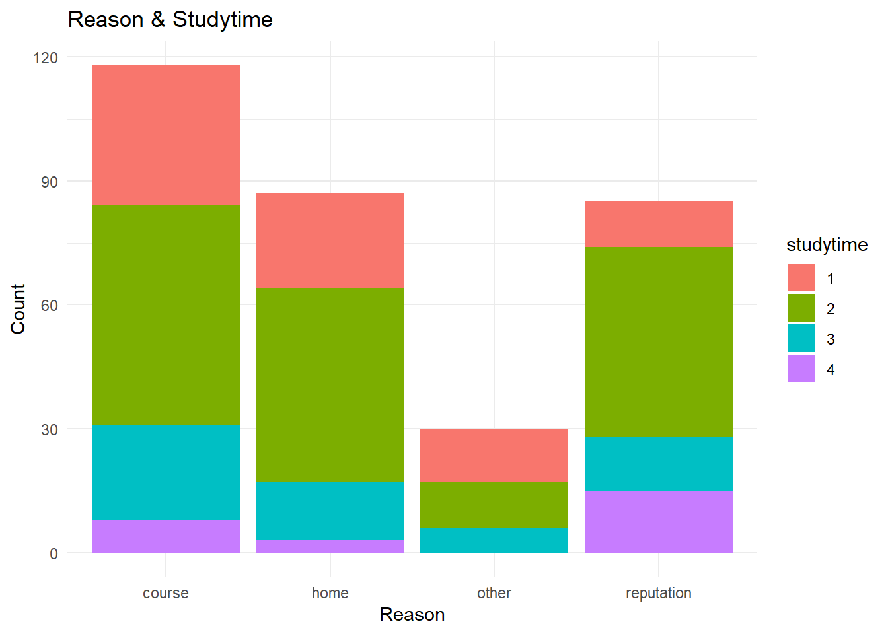
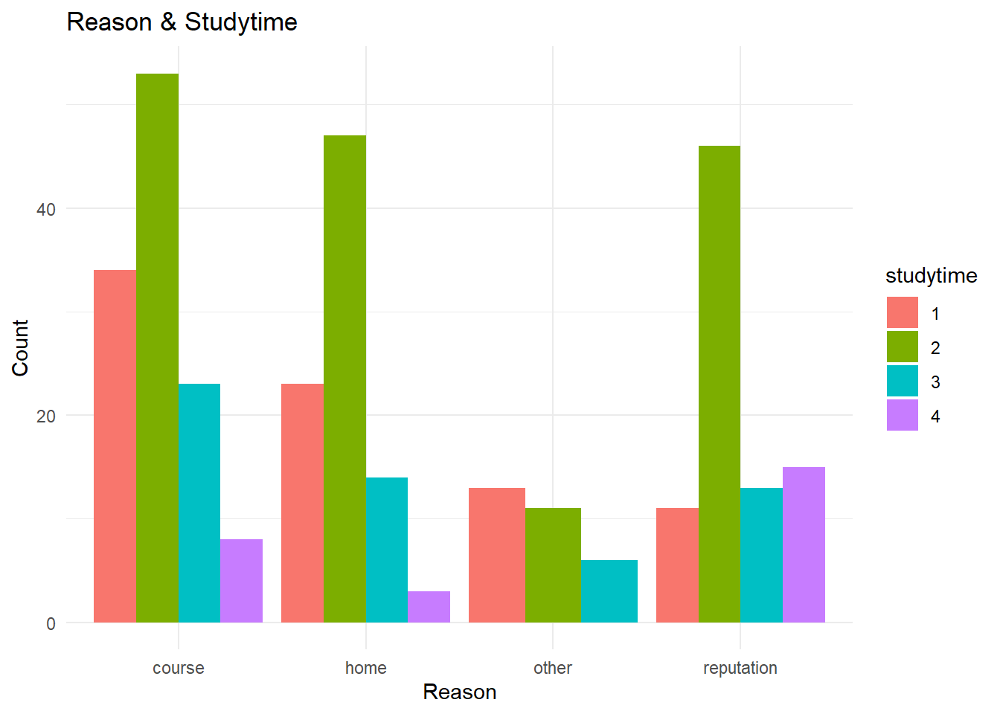
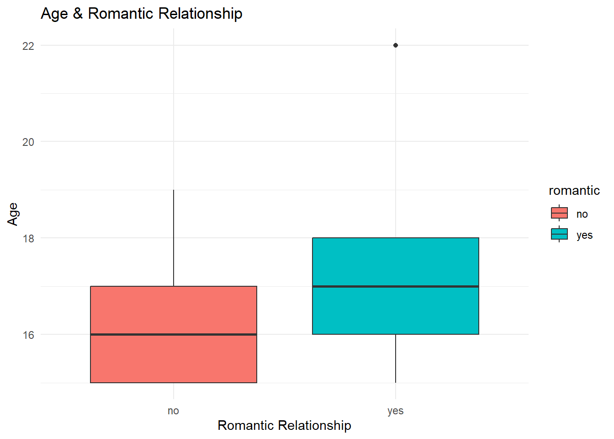
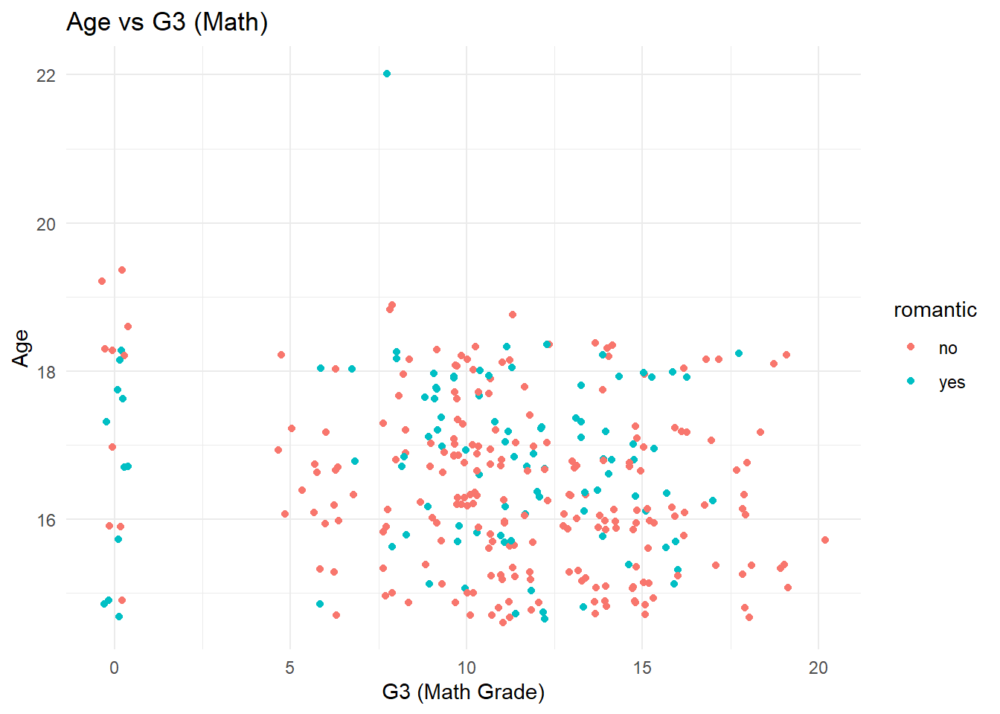
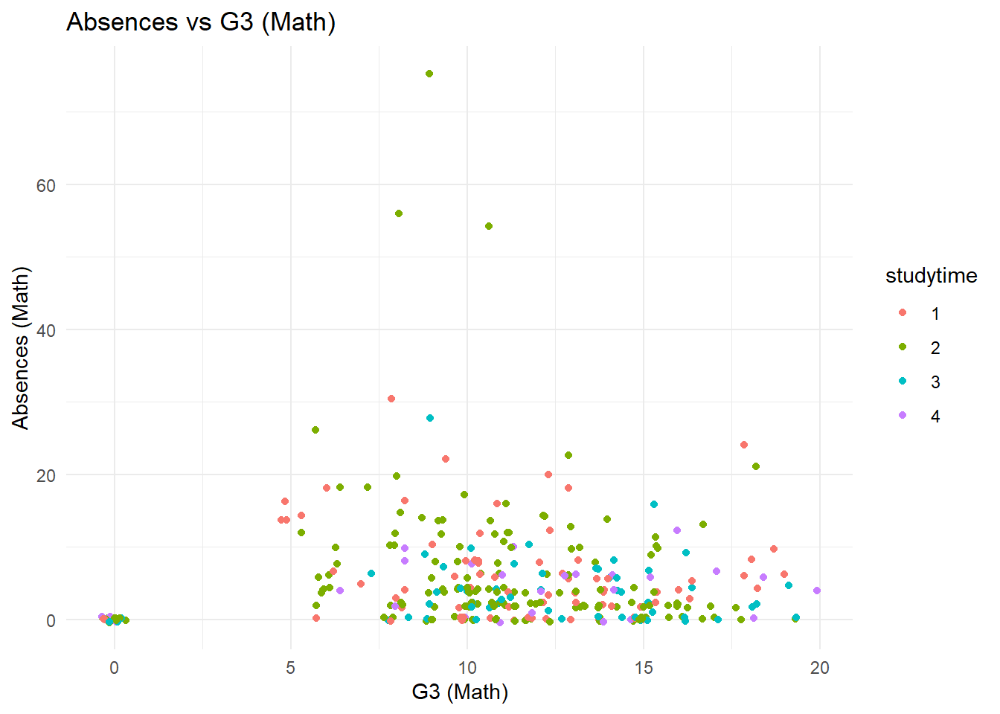
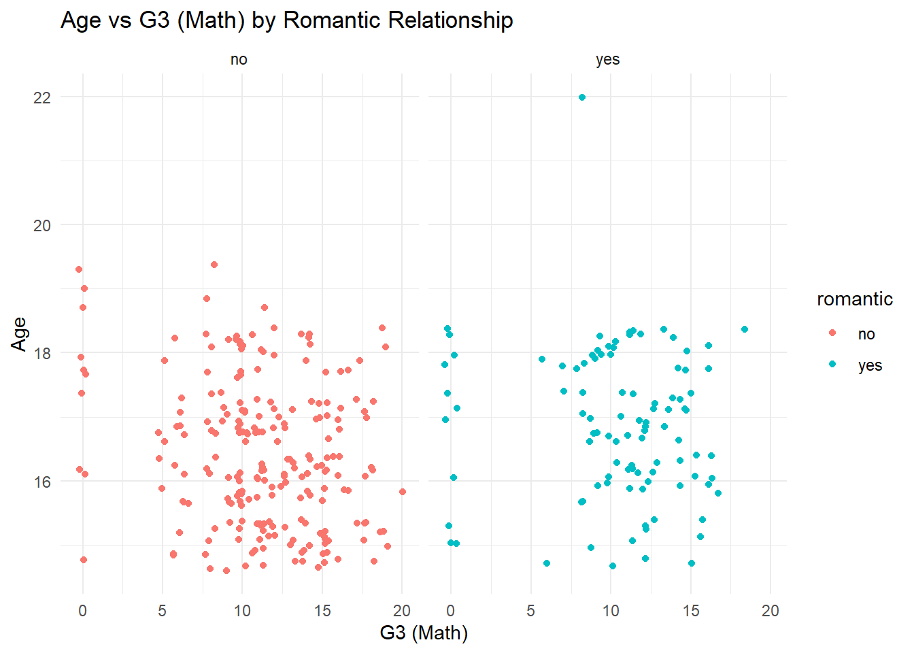
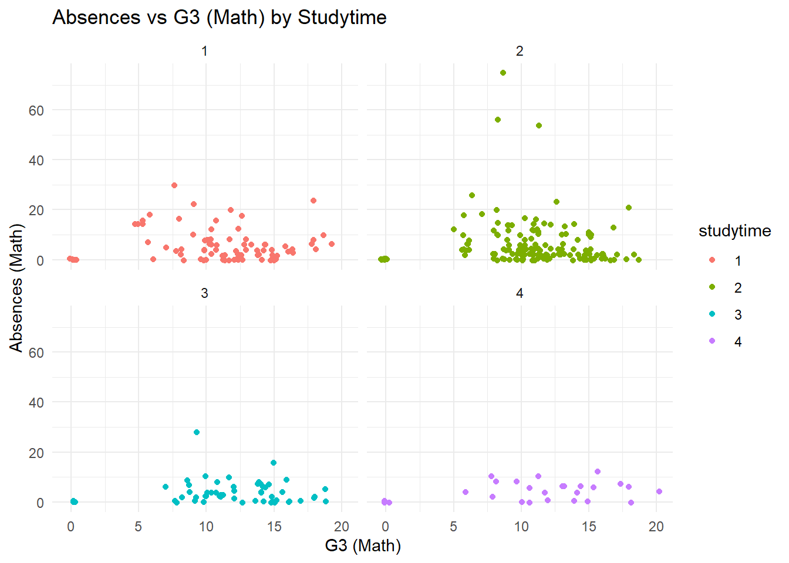
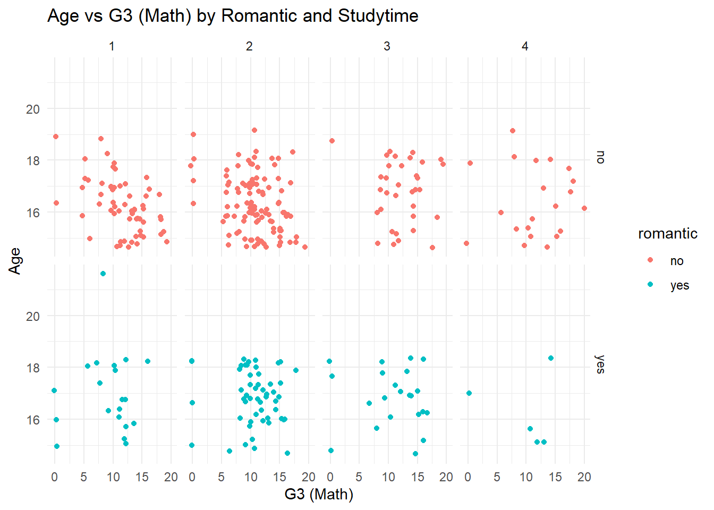

Warning in inner_join(mat_data, por_data, by = merge_cols): Detected an unexpected many-to-many relationship between `x` and `y`.
ℹ Row 79 of `x` matches multiple rows in `y`.
ℹ Row 79 of `y` matches multiple rows in `x`.
ℹ If a many-to-many relationship is expected, set `relationship =
"many-to-many"` to silence this warning.
print(nrow(using_inner_join))
[1] 382
Use an inner_join() on all variables other than G1, G2, G3, paid, and absences
For the math data, Portuguese, and combined data, choose four categorical variables you are interested in and convert those into factor variables in each tibble. Use Mutate()
The data type of each column is the first point of concern to me. It appears that there are many categorical variables that are shown as characters in the data.
There does not appear to be any missing data in the combined dataset
Categorical Variables
Create a one-way contingency table, a two-way contingency table, and a three-way contingency table for some of the factor variables you created previously. Use table() to accomplish this.
– Interpret a number from each resulting table (that is, pick out a value produced and explain what that value means.)
no yes
course 37 16
home 30 17
other 5 6
reputation 33 13
creating a three-way table and subsetting it
three_way_table[, "2", ]
no yes
course 37 16
home 30 17
other 5 6
reputation 33 13
Create a two-way contingency table using group_by() and summarize() from dplyr. Then use pivot_wider() to make the result look more like the output from table().
Create a stacked bar graph and a side-by-side bar graph. Give relevant x and y labels, and a title for the plots.
ggplot(grouped_table, aes(x = reason, y = count, fill = studytime)) +geom_bar(stat ="identity", position ="stack") +labs(title ="Reason & Studytime",x ="Reason",y ="Count") +theme_minimal()

From this view we can more easily see the counts for each reason aggregated across the studytimes.
ggplot(grouped_table, aes(x = reason, y = count, fill = studytime)) +geom_bar(stat ="identity", position ="dodge") +labs(title ="Reason & Studytime",x ="Reason",y ="Count") +theme_minimal()

In contrast to the stacked bar chart, here we lose some notion of the aggregated totals between each reason, but we can better understand how studytimes compare within a given reason. We can also more readily compare the magnitudes of studytimes across reasons as well.
Numeric Variables
age, absences, and the three test grades variables (G1, G2, and G3)
Find measures of center and spread for three of these variables (including at least one G3 variable)
Create a histogram, kernel density plot, and boxplot for two of the numeric variables across one of the categorical variables (that is, create graphs that can compare the distributions across the groups on the same plot (no faceting here)). Add appropriate labels and titles
ggplot(combined_data, aes(x = romantic, y = age, fill = romantic)) +geom_boxplot() +labs(title ="Age & Romantic Relationship",x ="Romantic Relationship",y ="Age") +theme_minimal()

Create two scatterplots relating a G3 variable to other numeric variables (put G3 on the y-axis). You should jitter the points if they sit on top of each other. Color the points by a categorical variable in each. Add appropriate labels and titles.
ggplot(combined_data, aes(x = G3.x, y = age, color = romantic)) +geom_jitter() +labs(title ="Age vs G3 (Math)",x ="G3 (Math Grade)",y ="Age") +theme_minimal()

Will likely need to investigate the many zero’s that appear in the G3 scores for legitimacy
ggplot(combined_data, aes(x = G3.x, y = absences.x, color = studytime)) +geom_jitter() +labs(title ="Absences vs G3 (Math)",x ="G3 (Math)",y ="Absences (Math)") +theme_minimal()

Repeat the scatter plot step but use faceting to obtain graphs at each setting of another categorical variable
ggplot(combined_data, aes(x = G3.x, y = age)) +geom_jitter(aes(color = romantic)) +facet_wrap(~ romantic) +labs(title ="Age vs G3 (Math) by Romantic Relationship",x ="G3 (Math)",y ="Age") +theme_minimal()

ggplot(combined_data, aes(x = G3.x, y = absences.x)) +geom_jitter(aes(color = studytime)) +facet_wrap(~ studytime) +labs(title ="Absences vs G3 (Math) by Studytime",x ="G3 (Math)",y ="Absences (Math)") +theme_minimal()

Repeat the scatter plot step but use faceting to obtain graphs at each combination of two categorical variables.
ggplot(combined_data, aes(x = G3.x, y = age)) +geom_jitter(aes(color = romantic)) +facet_grid(romantic ~ studytime) +labs(title ="Age vs G3 (Math) by Romantic and Studytime",x ="G3 (Math)",y ="Age") +theme_minimal()

ggplot(combined_data, aes(x = G3.x, y = absences.x)) +geom_jitter(aes(color = studytime)) +facet_grid(romantic ~ studytime) +labs(title ="Absences vs G3 (Math) by Romantic and Studytime",x ="G3 (Math)",y ="Absences (Math)") +theme_minimal()